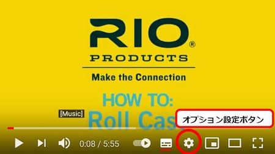

ティップス
釣りの最中に ロールキャスト：あまり語られることが無いが、実に有益なキャスト
最近は、フライフィッシングを楽しめる管理釣り場がだんだん減っていると聞きました。いろいろな事情があるかとは思いますが、ルアーの釣りに比べると、後ろに広いスペースの必要なフライフィッシングでは、十分にキャストを楽しめる管理釣り場は少ないかもしれません。
また、背後の通路を歩いていた人にフライを引っ掛けてしまった！ などのアクシデントもあるようです。
こうした状況では、普通のフライフィッシング、キャスティングの入門書ではあまり詳しく述べられることの無いロールキャストが役に立ちます。
- 利点１：背後にまったくスペースが無くても、管理釣り場なら十分な距離のキャストができる。
- 利点２：背後を歩く他の釣り人、見物人への危険が無い。
- 利点３：フォルスキャスト（最終的なキャストの前に行う予備的キャスト）を繰り返す必要が無く、効率的である。
- 利点４：上達すれば、静かにフライを水面に落とすことができる。（プレゼンテーション）
管理釣り場へ行けるだけのお金が貯まった時のために（笑）、ロールキャストの練習をしなければ！ と思い立ち、YouTube をグルグルと見て回っていた。すると、
「The Roll Cast - How To Master The Roll Cast - Fly Fishing Fly Casting」
という素晴らしい動画にめぐり合った。
※ YouTube 再生画面右下の「歯車マーク」をクリックすると、再生速度・字幕（英語ですが）の有無など、オプション設定を行うことができます。

調べてみると、Bumcast というチャンネルで提供されているこのビデオクリップは、ニュージーランド南島の釣りの名所、ワナカ湖の畔、アルバート・タウンにあるThe Swift Fly Fishing Company という会社で制作されたことがわかった。さっそくメールを書いて、動画のナレーションの和訳を僕のウェブサイトに掲載して良いか訊ねたところ、ディレクターのマクニール氏から快諾の返信を頂くことができた。
それから動画をダウンロードして音声のみを取り出し、フリーの文字起しソフトにかけたりかなり苦労して文字起しをした。ところが、今見てみると、YouTube には、「文字起し」の機能があることがわかり、今までの苦労は何だったんだ！ とショックを受けたが、まぁ良い勉強になったと開き直って、結果を記事にしている次第。
ちなみにこの、The Swift Fly Fishing Company という会社は、Epic というブランドでハンドクラフトの高級フライロッドを出しており、日本でも人気があるらしい。設立されて何年になるかは知らないが、この会社が紹介されているNZのテレビニュースを見た覚えがある。さすがに手作り文化の息づくニュージーランドの会社らしく、ロッドメイキングのキットやブランクを販売しているところがさすがである。
それでは、文字起しした英文を、自動翻訳サービスに助けられながら拙訳した和文と、動画ナレーションの原文とを載せます。何かおかしいところがあったらご指摘ください。
もし、これから始まるあなたのフライフィッシングの経歴において、二種類のキャストしか学ばないつもりだとしたら、その二つは絶対に最高のものでなければなりません。
標準的なオーバーヘッドキャストは別として、ロールキャストとリーチ・メンドは、私が知っている中で最も汎用性の高いテクニックです。
この二つのキャストを使えば、ほかのどんなキャストよりも多くの魚を釣ることができるのは間違いありません。釣れやすさを一から十までの段階で評価すると、どちらのキャストも確実に十点満点が得られます。
ロールキャストは実際には特別なキャストです。すべてのスペイキャストの基本であり、一度身に付ければ、シングルハンドやダブルハンドのロッドでも、無数の便利なキャストができるようになります。
繰り返しますが、上手に行われたロールキャストは、魔法の切り札のような働きをします。
一度基本のロールキャストをマスターすれば、そこからは、ダイナミックロール、ジャンプロール、スイッチキャスト、シングルスペイ、ダブルスペイなど、ほとんどすべてのスペイキャストを習得する道が開けるでしょう。
ロールキャストは、バックキャストのスペースが限られているか、まったく無い場合に使うキャストです。上手くやれば、とてもステルス性の高い、魚に気づかれにくいキャストにもなります。
また、フライを水中から引き上げて、再びキャストし、釣りを続けるための最も効率的な方法でもあります。
ロールキャストは、不要なフォルスキャスト（通常のキャストにおける、前後への予備的キャスト）を減らし、ラインやリーダーが絡まったり、フックを身体に引っ掛けてケガをしたりする可能性を減らします。
さらに、重いシンクティップ・ラインやシューティングヘッドを持ち上げるのにも最適なキャストです。
練習を積むことで、ロールキャストによってとても正確にフライをキャストできるようになります。もしあなたが、釣りのチャンスや、可能性を広げてくれるキャストを求めているのであれば、それはロールキャストです。
ほかのスペイキャストと同様に、ロールキャストは二つのパートから構成されています。
一つめはセットアップとラインの位置を決めること、
二つめはラインの重みをロッドに掛けること（ローディング・ムーブ）とラインの投射（デリバリー）です。
ロールキャストは、芝生の上でも、水面でも練習できますが、私が思うには、芝生の方が習得するのに適していると思います。芝生では、水面で練習する時のように水の表面張力が無いので、そのぶん生徒さんたちは、ロールキャストにおいて、スムーズに力を加えることを早く覚えられます。そうしないと、ラインは単に芝から引きはがされてしまい、ロッドによって持ち上げられないのです。
芝生の上でロールキャストができるなら、ほとんどどこででもできます。
まず、ロッドティップから５～６メートルのラインを引き出してから、リールがだいたい耳の高さに来るぐらいまでゆっくりとロッドティップを立てて引いていきます。肘は少し曲げて、ロッドは少しだけ体の外側（右手でロッドを持つ人なら右側）に傾けて、後ろに倒します。
ここでは、ラインがロッドティップから垂れ下がり、体の後ろで大きなカーブを描くと同時に、あなたの前方の水面に伸びていることを確認してください。
このラインのたるみは、すぐに見て分かるとおりのD字の形状から「Dループ」と呼ばれます。このDループがすべての作用とロールキャストを実行するのです。
水面に浮いているラインの残りの部分は、ほぼあなたがフライをキャストしたい方向に向いているはずです。通常のロールキャストは、方向転換するために行うものではないことを覚えておいてください。
きれいなDループの形ができたら、あとのプロセスはとても簡単です。Dループはあなたがフライラインの負荷をロッドにかけることを助け、目の前にあるラインを水の表面張力に逆らって水面から持ち上げて、狙っているポイントまで届けます。
ロールキャストの二つめのパートは、通常のオーバーヘッドキャストのフォワードストロークと全く同じです。ロッドティップが、目の前の水面上に伸びたラインの少し内側を平行に進むように、ロッドにスムーズに力を加えます。鉄道の線路をイメージして、ロッドティップの軌道を、水面上のラインと平行に保ってください。
ロッドを前方に加速させるときにはゆっくりと動作を開始し、スムーズにパワーをかけてゆき、最後はピシッと止めます。スムーズな加速がこの動作の要点です。
スタートはゆっくりと、フィニッシュは素早く、となります。ストロークに力を入れすぎないようにしてください。適切な力の加減は、ロッドティップに引っ張られたラインが、水面の上（あるいは芝の上）を滑って来る程度で十分です。ラインをくるりと反転（ターンオーバー）させて、まっすぐ伸ばすのに十分なエネルギーがあれば良いのです。
気にくわないヤツを隣町まで叩き出すような勢いでキャストしないでください。ここにちょっとしたコツがあります。身体の背後に出来るDループの大きさは、あなたが水面から持ち上げようとするラインの長さに比例します。Dループが大きければ大きいほど、より多くのラインを水面から浮かせることができます。
より大きく、よりダイナミックなDループを作るには、後方へのロッドの振りかぶりが終わり、前方へのキャストに移る時に、ホール（haul）と呼ばれる動作を加えると良いでしょう。（ロッドを前方に加速させてゆく時に、ロッドを握る手とは反対の手でラインを大きく引く動作を入れる）
前方へのキャスト（フォワードキャスト）でホールを加えることで、ラインのスピードと飛距離が大幅にアップします。
これまで説明したような二つのパートから構成された、静的なロールキャストができるようになったら、二つのパートをより連続的なモーションで、流れるように実行してみてください。もっともっと動的（ダイナミック）なDループを作ることができ、より長いラインをキャストできることに気づくでしょう。
The Roll Cast - How To Master The Roll Cast - Fly Fishing Fly Casting : Narration
Copyright © 2012 Swift Flyfishing All rights reserved.If you are only going to learn two cast in your whole fly fishing career, the first two would have to be the absolute best.
The standard overhead cast aside the role cast and the leach mend are the absolute most versatile techniques that I know of.
There is no doubt that those two casts are going to get you more fish than any others. On a scale of one to ten and fishiness both get a solid ten.
The role cast really is a special cast. It's the foundation of all spey cast and once mastered it opens up a myriad of really useful casts but the single and the double handed rod.
Time after time, a well-executed roll cast is going to become a get-out-of-jail-free card.
Once mastered you'll be well on your way to learning the dynamic role, the jump role, the switch cast, the single spey, the double spey, and almost every spey cast there is.
The roll cast is the cast to use when you have limited or no back cast room. It's also a really stealthy cast when executed well.
That's also probably the most efficient way to get a fly up and back into the water and fishing again.
The role cast reduses unnecessary false casting and the likelihood of tangles and injury. It's also a really great cast for lifting up heavy sink tips and shooting heads.
With practice the role cast can also be really accurate and if you want a cast that's going to open up a much broader range of fishing opportunities for you, then this is it. Like all spey casts the role cast is a cast in two parts.
The first thing the set up and line positioning, the second the loading move and delivery.
Now you can practice this on grass or water, I found the grass is actually better of a teaching is the lack of surface tension quickly teaches students to apply power smoothly. If they don't the line simply pulls out through the grass and it won't lift.
If you can do this on grass you can do it almost anywhere.
With five or six meters of line off the tip, slowly draw the rod tip back until your reel is about ear level. Your elbow should be bent slightly, and the rod should be slightly canted out and back behind you.
What we're looking for here is the big curve of line hanging from your rod tip down onto the water in front of you. That sag of line is called a "D-loop" for obvious reasons, and is that D-loop does the all the work and roll cast.
The rest of the line that's lying on the water out in front of you should be pointing roughly in the direction you wanted to travel. Remember that the standard roll cast is not a change of direction cast. Now that you have a nice D-loop form, the rest is actually pretty easy. The D-loop is going to help load the rod against the surface tension of the line out in front of you, and it's going to lift it off the water and deliver it to the target.
The second part of the roll cast is exactly the same as the forward stroke on your standard overhead cast. Power the rod tip along slightly inside and parallel to the line you have along on the water in front of you. Think rail way tracks, keep them parallel. Accelerate forward with smooth power application and finish with a crisp stop.
Smooth acceleration is the name of the game here. Think start slow, finish fast.
Don't overpower the stroke. The correct amount of power is always that which just slips the line and has enough energy to turn it over and straighten it out. Not punch it into the next territory.
Here's some tips. The amount of line and your D-loop affect how much line you can lift. The bigger the D-loop the more line you can lift off the water.
Kicking back a larger more dynamic D-loop can be done by adding a haul on the back cast. Adding a haul on the forward delivery will greatly increase line speed and distance.
Once you have this two parts static roll cast organized try running the two parts together in a more fluid continue motion. You'll find that you can create a much more dynamic D-loop and cast much more line.
補足：
ロールキャストについては、下記の YouTube 動画も参考になります。
How to Make a Roll Cast - RIO Products
ORVIS - Fly Casting Lessons - Making a Roll Cast
ORVIS - Fly Casting Lessons - Making An Accurate Roll Cast
ORVIS - Fly Casting Lessons - Improving Your Roll Cast
ティップス 目次へ
サイトマップ
ホームへ
お問い合わせ